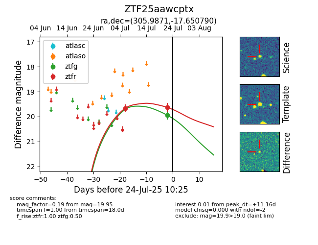

Target ZTF25aawcptx at 2025-07-24 10:25, see:
FINK: fink-portal.org/ZTF25aawcptx
Lasair: lasair-ztf.lsst.ac.uk/objects/ZTF25aawcptx
ALeRCE: alerce.online/object/ZTF25aawcptx
alt names
ZTF25aawcptx (ztf,fink)
coordinates:
equatorial (ra, dec) = (305.9871,-17.65079)
galactic (l, b) = (26.4744,-28.12355)
photometry
last ztfg=19.95, ztfr=19.63
1 ztfg, 2 ztfr detections
